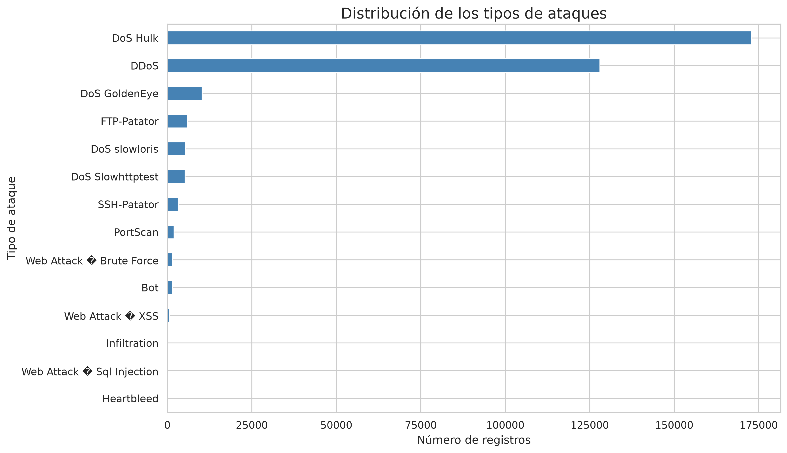
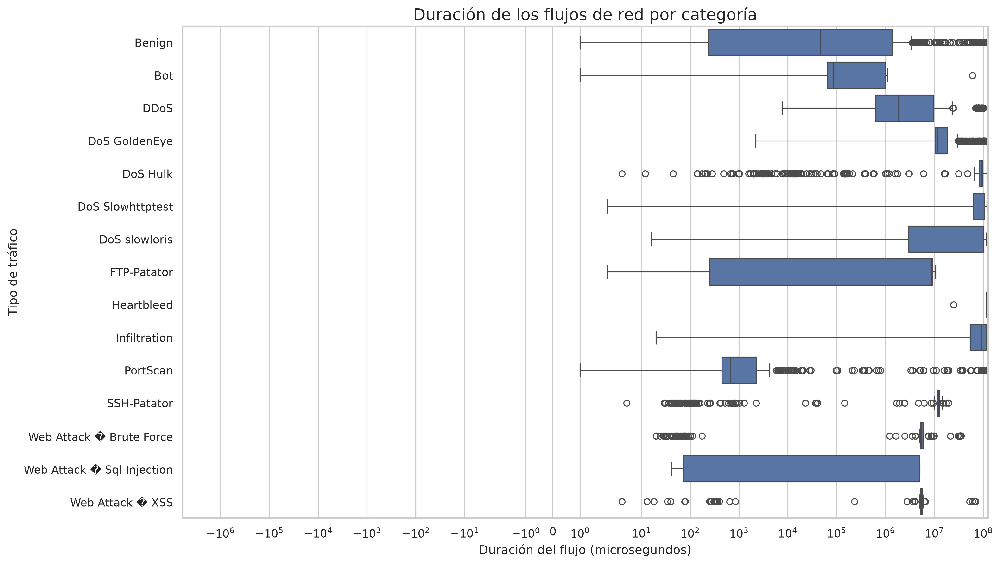

Introducción y objetivo
En una red, cada comunicación genera información sobre su duración, protocolo y paquetes intercambiados. Un administrador de sistemas puede estudiar esos registros para conocer el comportamiento del tráfico y decidir qué situaciones merecen revisión.
El objetivo no era crear un antivirus ni un detector de intrusiones automático, sino demostrar el uso de Pandas para adquirir, limpiar, explorar, transformar, agrupar y visualizar datos reales de ciberseguridad, documentándolos después en Quarto y GitHub Pages.
Las preguntas que hemos intentado responder son:
- ¿Qué tamaño y estructura tiene el conjunto de datos, y qué problemas de calidad presenta?
- ¿Cuánto tráfico aparece etiquetado como benigno y cuánto como malicioso?
- ¿Qué categorías de ataques son más frecuentes?
- ¿Cómo varían duración y cantidad de paquetes entre categorías?
- ¿Qué aporta
groupby,pivot_tabley el filtrado avanzado a la investigación de eventos de red? - ¿Qué recomendaciones prácticas puede extraer un SysAdmin, sin confundir indicios con pruebas concluyentes?
Adquisición y descripción del dataset
Origen y características
Los datos proceden del conjunto público CICIDS2017 disponible en Kaggle, relacionado con el Canadian Institute for Cybersecurity de la Universidad de New Brunswick. El equipo utilizó ocho archivos Parquet con registros de flujos de red etiquetados.
Un flujo resume una comunicación: duración, paquetes enviados y recibidos, protocolo y otras propiedades. La columna Label indica si es tráfico Benign o una categoría de ataque, como DDoS o DoS Hulk. No estamos analizando los paquetes individuales de una captura PCAP.
| Indicador del conjunto consolidado | Resultado obtenido |
|---|---|
| Registros | 2.313.810 |
| Columnas | 79 |
| Variables numéricas | 77 |
| Columnas de texto | 2 |
| Archivos originales | 8 |
| Valores nulos detectados en el consolidado | 0 |
La columna Dataset_Source se añadió durante la unión para conservar la procedencia de cada registro. Esta versión del conjunto no dispone de marcas temporales ni direcciones IP de origen y destino: no sería riguroso atribuir ataques a un equipo concreto ni dibujar una evolución temporal con estos datos.
Exploración previa de los archivos
Antes de unir los Parquet conviene conocer su estructura y localizar diferencias de dimensiones, nulos y tipos. El archivo explorar.py realiza esta inspección.
Ver código python 12 líneas
# Exploración ANTES de combinar los archivos
import os
import pandas as pd
for nombre in sorted(os.listdir("data/raw")):
if nombre.endswith(".parquet"):
parcial = pd.read_parquet(os.path.join("data/raw", nombre))
print(nombre, parcial.shape)
parcial.info()
print("Nulos:", parcial.isnull().sum().sum())
print("Duplicados:", parcial.duplicated().sum())
print(parcial["Label"].value_counts().head())Interpretación SysAdmin. Validar los archivos por separado ayuda a detectar problemas de formato antes de mezclar registros. Si dos archivos tuviesen columnas con tipos incompatibles, las estadísticas posteriores podrían ser incorrectas.
Unión con concat()
El script unir_datasets.py reúne los ficheros y genera data/processed/cicids2017_completo.parquet.
Ver código python 21 líneas
import glob
import os
import numpy as np
import pandas as pd
archivos = sorted(glob.glob("data/raw/*.parquet"))
datasets = []
for archivo in archivos:
parcial = pd.read_parquet(archivo)
parcial["Dataset_Source"] = os.path.basename(archivo)
datasets.append(parcial)
df_completo = pd.concat(datasets, ignore_index=True)
df_completo.columns = df_completo.columns.str.strip()
df_completo.replace([np.inf, -np.inf], np.nan, inplace=True)
df_completo.drop_duplicates(inplace=True)
os.makedirs("data/processed", exist_ok=True)
df_completo.to_parquet(
"data/processed/cicids2017_completo.parquet", index=False
)concat() apila los registros de los ocho archivos. ignore_index=True crea un índice continuo y Dataset_Source permite rastrear su origen. Se sustituyen infinitos por nulos y se eliminan duplicados exactos considerando todas las columnas, incluida la procedencia.
Interpretación SysAdmin. Consolidar los datos facilita la investigación conjunta y permite repetir el mismo criterio en todas las categorías. Se debe conservar siempre la trazabilidad del origen.
Exploración y limpieza con Pandas
Inspección inicial y resúmenes descriptivos
El script analisis_exploratorio.py permite comprobar dimensiones, tipos y estadísticas generales.
Ver código python 7 líneas
df = pd.read_parquet("data/processed/cicids2017_completo.parquet")
print(df.shape) # Registros y columnas
df.info() # Tipos y valores presentes
print(df.dtypes.value_counts()) # Tipos de columnas
print(df.describe().T) # Media, cuartiles, extremos...
print(df["Label"].value_counts()) # Frecuencia por etiqueta
print(df["Protocol"].value_counts())describe() resume cada variable numérica y permite identificar rangos extremos. value_counts() muestra la frecuencia de cada etiqueta. Este paso responde a qué datos tenemos antes de intentar interpretar los ataques.
Revisión de nulos, infinitos y duplicados
El script calidad_datos.py comprueba los principales problemas del conjunto consolidado.
Ver código python 9 líneas
numericas = df.select_dtypes(include="number")
nulos = df.isnull().sum().sum()
infinitos = np.isinf(numericas).sum().sum()
# Los duplicados se examinan también SIN la columna de origen
duplicados_sin_origen = (
df.drop(columns=["Dataset_Source"]).duplicated().sum()
)
print(nulos, infinitos, duplicados_sin_origen)En la revisión del informe se obtuvieron 0 nulos y 82.004 filas con características repetidas si se ignora Dataset_Source.
Matiz importante: no son necesariamente 82.004 duplicados eliminados. En la unión se quitaron duplicados idénticos incluyendo Dataset_Source; esta comprobación posterior usa otro criterio. Dos filas con características iguales pueden representar flujos distintos, de modo que no se deben borrar automáticamente sin justificarlas.
Duraciones negativas y transformación
Se encontraron 88 registros con Flow Duration < 0, todos en la categoría Benign, equivalentes al 0,0038 % del conjunto. No tiene sentido interpretar una duración negativa como tiempo real.
Ver código python 8 líneas
negativos = df.loc[df["Flow Duration"] < 0]
df_duracion = df.loc[df["Flow Duration"] >= 0].copy()
# Crear una categoría resumida para comparar dos grandes grupos
df_duracion["Tipo_Trafico"] = df_duracion["Label"].apply(
lambda etiqueta: "Benigno" if etiqueta == "Benign"
else "Malicioso"
)| Población de análisis | Registros |
|---|---|
| Consolidado original | 2.313.810 |
| Duraciones negativas | 88 |
| Subconjunto con duración no negativa | 2.313.722 |
Interpretación SysAdmin. Filtrar un subconjunto no equivale a borrar los datos originales. Si se compara la duración, hay que utilizar el subconjunto válido en todas las operaciones pertinentes. El script estadístico del repositorio aplica ese filtro en su primer resumen, pero en una comparación posterior vuelve a usar df; para comparar duraciones con el mismo criterio, aquí usamos df_duracion.
Tres resúmenes estadísticos del tráfico
Resumen 1. Distribución benigno y malicioso
Ver código python 8 líneas
conteo_etiquetas = df["Label"].value_counts()
tipo = df["Label"].apply(
lambda x: "Benigno" if x == "Benign" else "Malicioso"
)
recuento = tipo.value_counts()
porcentajes = (tipo.value_counts(normalize=True) * 100).round(2)
print(recuento)
print(porcentajes)| Tipo de tráfico | Registros | Porcentaje |
|---|---|---|
| Benigno | 1.977.318 | 85,46 % |
| Malicioso | 336.492 | 14,54 % |
| Total | 2.313.810 | 100 % |
Las etiquetas maliciosas más frecuentes son DoS Hulk (172.846) y DDoS (128.014); también aparecen DoS GoldenEye (10.286), FTP-Patator (5.931) y otras categorías menos numerosas.
Interpretación SysAdmin. El dataset está desequilibrado: la mayoría de los flujos son benignos, y algunos ataques aparecen mucho más que otros. Por ello no conviene interpretar solo el número bruto de detecciones ni concluir que los ataques más representados en este dataset sean los más habituales en cualquier red real.
Resumen 2. Duración de los flujos
Ver código python 4 líneas
print(df["Flow Duration"].describe()) # Vista original
print(df_duracion["Flow Duration"].agg( # Vista válida
["count", "mean", "median", "min", "max"]
))| Estadística del conjunto original | Valor publicado |
|---|---|
| Media de duración | 18.075.750 µs |
| Mediana de duración | 64.783 µs |
| Mínimo | −13 µs |
| Máximo | 120.000.000 µs |
La media es el promedio; la mediana, el valor central al ordenar las duraciones. La diferencia entre ambas muestra que unas pocas duraciones elevadas pueden influir mucho en la media. La tabla de arriba es la del conjunto original y por eso conserva el mínimo negativo; los siguientes análisis de duración utilizan df_duracion.
Interpretación SysAdmin. Conviene comparar medias, medianas y valores extremos, no fijar un umbral de alarma únicamente con la media global.
Resumen 3. Protocolos de red
Ver código python 2 líneas
protocolos = df["Protocol"].value_counts()
print(protocolos)Identificador Protocol | Registros |
|---|---|
| 6 (TCP) | 1.363.379 |
| 17 (UDP) | 948.842 |
| 0 (valor presente en el dataset) | 1.589 |
Interpretación SysAdmin. TCP y UDP concentran prácticamente todos los registros. En una infraestructura real, un administrador debería contrastar la distribución por protocolo con el servicio esperado, los registros del firewall y las políticas de seguridad. La frecuencia por sí sola no demuestra un incidente.
Análisis avanzado con Pandas
Agrupaciones con groupby() y agg()
La consulta del script estadístico agrupa los registros por etiqueta y calcula medidas sobre cada categoría.
Ver código python 8 líneas
resumen = df_duracion.groupby("Label").agg(
Registros=("Label", "size"),
Duracion_Media=("Flow Duration", "mean"),
Duracion_Mediana=("Flow Duration", "median"),
Paquetes_Enviados=("Total Fwd Packets", "mean"),
Paquetes_Recibidos=("Total Backward Packets", "mean")
)
print(resumen.sort_values("Duracion_Mediana", ascending=False).round(2))groupby("Label") separa las filas por clase; agg() aplica varias operaciones a cada grupo; mean calcula medias y median medianas. Así pasamos de millones de registros a una tabla comparativa.
Por ejemplo, las medianas de duración publicadas son: Heartbleed 119.261.118 µs, DoS slowloris 99.999.406 µs, DoS Hulk 86.401.812 µs, Benign 48.648 µs y PortScan 674 µs. Estos valores corresponden al subconjunto de duración no negativa del informe.
Interpretación SysAdmin. Distintas familias de ataques presentan duraciones muy diferentes; los valores pueden orientar qué registros revisar, pero no permiten clasificar una conexión por sí solos.
Comparación de dos grupos
Ver código python 7 líneas
comparacion = df_duracion.groupby("Tipo_Trafico").agg(
Registros=("Label", "size"),
Paquetes_Enviados=("Total Fwd Packets", "mean"),
Paquetes_Recibidos=("Total Backward Packets", "mean"),
Duracion_Mediana=("Flow Duration", "median")
)
print(comparacion.round(2))| Clase | Registros | Paquetes enviados (media) | Paquetes recibidos (media) | Duración mediana |
|---|---|---|---|---|
| Benigno | 1.977.230 | 11,96 | 13,85 | 48.648 µs |
| Malicioso | 336.492 | 5,93 | 4,96 | 63.136.302,5 µs |
Son las cifras comunicadas en el informe de resultados del grupo para la comparación con duraciones válidas. No deben confundirse con los recuentos originales, que conservan los 88 registros negativos.
Interpretación SysAdmin. En esta muestra el tráfico malicioso presenta una mediana de duración mucho mayor. Aun así, una conexión larga también puede ser legítima; habría que contrastarla con volumen, protocolo y contexto.
Tabla dinámica con pivot_table()
Ver código python 8 líneas
tabla = pd.pivot_table(
df,
values="Total Fwd Packets",
index="Label",
columns="Protocol",
aggfunc="mean"
)
print(tabla.round(2))Esta tabla cruza tipo de tráfico (filas) y protocolo (columnas). Cada celda muestra la media de paquetes enviados. En el script original se usa fill_value=0: hay que recordar que un cero puede representar una combinación sin registros, no necesariamente una media real de cero. Aquí dejamos esas celdas vacías para distinguir ambos casos.
Interpretación SysAdmin. Permite detectar categorías y protocolos que conviene estudiar en conjunto; antes de proponer una alerta, sería necesario comprobar la cantidad de observaciones de cada celda.
Selección por condiciones con loc
Ver código python 5 líneas
ataques_dos = df.loc[
df["Label"].str.contains("DoS|DDoS", case=False, na=False),
["Label", "Protocol", "Flow Duration", "Total Fwd Packets"]
]
print(ataques_dos.head(10))loc permite elegir filas mediante una condición y mostrar solamente las columnas relevantes. Aquí se aíslan etiquetas asociadas a DoS y DDoS para inspeccionar sus características.
Selección por posición con iloc
Ver código python 1 líneas
print(df.iloc[:5, :5])iloc selecciona por posición numérica: aquí, las cinco primeras filas y columnas. Es útil para verificar rápidamente que la tabla se cargó como se esperaba, no para sacar conclusiones estadísticas.
Filtrado avanzado con dos condiciones
Ver código python 7 líneas
flujos_largos = df.loc[
(df["Flow Duration"] > 60_000_000) &
(df["Total Fwd Packets"] > 100),
["Label", "Flow Duration", "Total Fwd Packets"]
]
print(len(flujos_largos))
print(flujos_largos.head(10))Con & exigimos simultáneamente una duración de más de 60 segundos y más de 100 paquetes enviados. El resultado publicado fue de 7.942 flujos.
Interpretación SysAdmin. Este filtro sirve para crear una lista de revisión, no una lista de ataques confirmados: también hay tráfico benigno con esas características. Un administrador debería revisar registros relacionados y ajustar los umbrales al funcionamiento normal del servicio.
Visualización e interpretación
Gráfico estático 1. Distribución de los ataques
Ver código python 9 líneas
import matplotlib.pyplot as plt
ataques = df["Label"].value_counts().drop("Benign", errors="ignore")
ataques.sort_values().plot(kind="barh", color="steelblue", figsize=(12, 7))
plt.title("Distribución de los tipos de ataques")
plt.xlabel("Número de registros")
plt.tight_layout()
plt.savefig("images/01_distribucion_ataques.png", dpi=300)
plt.close()
Interpretación SysAdmin. El gráfico identifica qué etiquetas ocupan más registros de esta muestra. DoS Hulk y DDoS destacan; esto puede orientar las siguientes consultas, pero no debe confundirse con la frecuencia real de incidentes en una empresa.
Gráfico estático 2. Duración por categoría
Ver código python 13 líneas
import seaborn as sns
muestra = pd.concat(
[grupo.sample(n=min(len(grupo), 1000), random_state=42)
for _, grupo in df_duracion.groupby("Label")],
ignore_index=True
)
sns.boxplot(data=muestra, x="Flow Duration", y="Label")
plt.xscale("symlog")
plt.xlabel("Duración del flujo (microsegundos)")
plt.tight_layout()
plt.savefig("images/02_duracion_trafico.png", dpi=300)
plt.close()
Cómo leerlo: la caja contiene el 50 % central de los valores; la raya interior es la mediana, los bigotes muestran el rango habitual según el criterio del gráfico y los círculos son valores atípicos. El script toma hasta 1.000 flujos por etiqueta, por lo que es una visualización de una muestra, no de todos los millones de filas.
La escala symlog incluye una parte negativa en el eje aunque los registros mostrados ya están filtrados a duraciones no negativas. Ver marcas negativas en el eje no demuestra que haya duraciones negativas en la muestra. Puede utilizarse otra escala al regenerar la figura.
Interpretación SysAdmin. Los distintos perfiles de duración justifican observar distribuciones y valores extremos; un outlier no equivale automáticamente a tráfico malicioso.
Gráfico interactivo con Plotly
Ver código python 17 líneas
import plotly.express as px
muestra_interactiva = pd.concat(
[grupo.sample(n=min(len(grupo), 1500), random_state=42)
for _, grupo in df_duracion.groupby("Label")],
ignore_index=True
)
fig = px.scatter(
muestra_interactiva,
x="Flow Duration",
y="Total Fwd Packets",
color="Label",
hover_data=["Total Backward Packets", "Protocol"],
title="Visualización interactiva del tráfico de red"
)
fig.update_xaxes(type="log")
fig.write_html("images/03_trafico_interactivo.html")El gráfico permite acercarse, ocultar categorías y consultar variables adicionales al situar el cursor sobre cada punto. En el eje logarítmico no se representan correctamente los valores cero, por lo que al rehacerlo conviene filtrar Flow Duration > 0 o emplear otra escala.
Interpretación SysAdmin. La relación entre duración y paquetes puede ayudar a priorizar inspecciones. No representa una evolución temporal, porque el conjunto procesado no conserva una marca de tiempo usable por conexión.
Interpretación técnica y medidas para un SysAdmin
A partir del análisis, las medidas siguientes son propuestas razonables para investigar situaciones similares en una infraestructura real. No se deduce que alguno de estos ataques haya sucedido en los equipos del grupo.
| Hallazgo del análisis | Qué investigaría un SysAdmin | Posible medida, previa validación |
|---|---|---|
| DoS Hulk y DDoS son etiquetas frecuentes en la muestra | Picos de peticiones, capacidad del servicio y alertas de red | Monitorizar tasas y configurar protección anti-DDoS o límites de petición adecuados |
| Los flujos tienen duraciones muy desiguales | Sesiones excesivamente largas y servicios implicados | Revisar timeouts, logs y sesiones persistentes sin bloquear por duración únicamente |
| TCP y UDP predominan en las conexiones | Puertos, servicios y patrones por protocolo | Ajustar reglas del firewall y monitorización por servicio |
| Hay 7.942 flujos con duración y paquetes elevados | Correlación entre duración, volumen y actividad autorizada | Crear alertas de revisión con umbrales adaptados al entorno |
| Se detectaron duraciones negativas | Calidad del proceso de captura o procesamiento | Validar datos antes de elaborar métricas y documentar exclusiones |
Límites de interpretación: los datos son de un entorno preparado para investigación; no hay IP ni tiempos que permitan atribuir los eventos a un host concreto o comparar series temporales. Una etiqueta, un promedio o un gráfico no demuestran por sí solos causalidad.
Conclusiones y mejoras futuras
El trabajo cubre las fases solicitadas: adquisición de ocho Parquet, consolidación con concat, exploración con info y describe, comprobación de calidad, transformación de etiquetas, groupby, pivot_table, loc, iloc, dos gráficos estáticos y una visualización interactiva. Todo se documenta en este archivo Quarto y se publica mediante GitHub Pages.
Las conclusiones principales son: predomina el tráfico benigno; DoS Hulk y DDoS son categorías de ataque muy presentes; existen diferencias descriptivas de duración y paquetes; y es necesario interpretar estos resultados junto con la calidad de los datos y el contexto operativo.
Como mejoras futuras proponemos unificar los criterios de limpieza y duplicados en todos los scripts, repetir los cálculos de duración con el mismo subconjunto, mejorar la legibilidad del boxplot y documentar cualquier nueva métrica con su unidad y población de análisis. Un modelo predictivo sería un proyecto posterior que exigiría un procedimiento de validación independiente.
Reproducibilidad, repositorio y publicación
El repositorio público contiene los scripts y la documentación: proyecto-sysadmin-pandas. La web principal del informe está en GitHub Pages.
Para reproducir los cálculos completos en el equipo que tiene el dataset:
Ver código bash 9 líneas
python3 -m venv .venv
source .venv/bin/activate
python -m pip install -r requirements.txt
python unir_datasets.py
python analisis_exploratorio.py
python calidad_datos.py
python analisis_estadistico.py
python graficos.py
quarto render index.qmdAntes de ejecutar quarto render con los datos locales, cambiar execute.eval a true en el encabezado YAML para que se ejecuten los bloques del informe. Con eval: false, Quarto publica el código y los resultados ya documentados sin requerir los Parquet grandes. Las imágenes y el HTML interactivo de images/ deben estar presentes en la carpeta de entrada, como en el repositorio.
Además se ha construido una aplicación web exploratoria complementaria. Es un recurso adicional: el entregable principal de Pandas es este informe Quarto y su repositorio, no la aplicación ni una presentación de diapositivas.